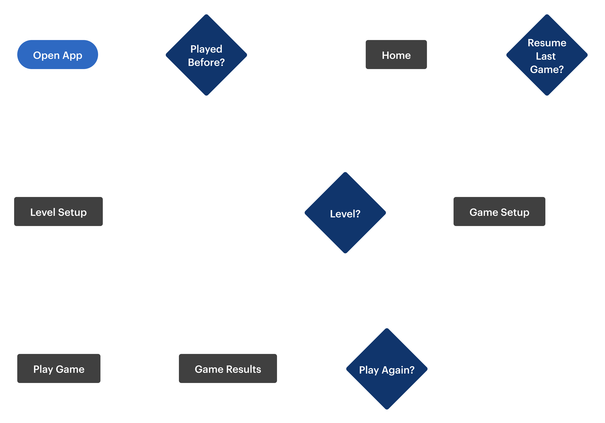

An app with targeted brain training exercises to help improve vision in children and adolescents with Cortical Visual Impairment (CVI).
Cortical Visual Impairment (CVI) stands as the leading visual impairment diagnosis in the United States, yet remains
largely unknown to the general public. This condition, predominantly affecting babies and young children, stems from damage
to the brain's visual processing centers rather than issues with the eyes themselves. While the brain struggles to interpret
signals from otherwise functional eyes, CVI offers hope through appropriate intervention and vision rehabilitation. Children
with this condition require early intervention, specialized therapy, and educational support, but face a significant gap in
accessible technology. The digital landscape lacks adequate applications on both Android and iOS platforms that address the
unique visual needs of young CVI patients, effectively barring them from the wealth of online literacy resources available
to their typically-sighted peers.
This project originated when researchers at the University of Northern Colorado identified the need for specialized digital
tools and approached UNC faculty for development assistance. The request was ultimately directed to App Team Carolina, a
nonprofit student organization focused on iOS application development for which I was a UI/UX Designer. Our vision was to
create an interactive gaming application designed to help young CVI patients playfully improve their condition through gradual
visual stimulation exercises. The design incorporated innovative strategies developed by Dr. Christine Roman-Lantzy, including
the bubble-word technique where children learn to recognize words by matching them to their distinctive bubble shapes, helping
them identify and understand visual features more effectively.
As my inaugural design project with App Team Carolina, this initiative held special significance in my development as a UI/UX
designer. My involvement extended beyond design responsibilities when I stepped into a team lead role for one semester, where
I coordinated with developers and project managers to advance the application. This dual perspective allowed me to bridge the
technical implementation challenges with user-centered design principles, ensuring the final product remained focused on the
unique needs of children with CVI. The opportunity to create technology that makes a meaningful difference in accessibility
and education became a foundational experience in my design career.
Given the specialized nature of Cortical Visual Impairment (CVI) and our limited direct access to affected individuals, our
research approach relied heavily on alternative information sources. Without the ability to conduct first-hand interviews
with CVI patients, we turned to online resources to develop a comprehensive understanding of their unique visual processing
challenges. Particularly valuable were video testimonials and educational content, including perspectives from both medical
professionals and families of children with CVI.
Our research findings directly informed our UI design decisions, highlighting several critical considerations for CVI-friendly
interfaces. We learned that effective applications for this user group must incorporate large, clearly defined text with high
contrast ratios to improve visual recognition. Equally important was the elimination of distracting background elements that
could overwhelm visual processing capabilities. Additionally, we discovered the importance of multi-sensory feedback through
strategic use of color and sound cues to reinforce interactions. Accessibility remained paramount throughout our design process,
as we ensured the application would be fully compatible with assistive technologies such as VoiceOver and switch control,
providing alternative interaction methods for users with varying degrees of visual processing abilities.
To inform our development approach for Bubbly, I conducted a comprehensive analysis of existing CVI-focused applications, which
uncovered a market with significant limitations in usability, progressive difficulty, and clear instructions. Several applications
placed essential accessibility features behind paywalls, creating additional barriers for users already facing challenges. Notably,
apps like Tap-N-See Now Lite and the EDA PLAY series offered basic interaction mechanics without meaningful progression, while
others like CVI Training lacked proper onboarding or instruction. This analysis highlighted crucial opportunities for Bubbly to
stand out through intuitive navigation, comprehensive customization options available without paywalls, and engaging gameplay
that progressively adapts to users' developing visual capabilities.
App Name |
Observations |
|---|---|
Tap-N-See Now Lite |
|
EDA PLAY Series |
|
Big Bang Bundle |
|
CVI Training (Recognition) |
|
Drag n Drop - BrightLittleEyes |
|
To ensure our design decisions were firmly rooted in user needs, I developed three distinct personas representing the primary stakeholders of the Bubbly application. These personas—a child with CVI, an educator, and a parent—reflect the multi-user ecosystem surrounding assistive educational technology and helped our team maintain focus on diverse user requirements throughout the development process. By identifying specific goals, frustrations, and expectations for each persona type, we gained valuable insight into the varying perspectives and needs that our application would need to address. These personas served as constant reference points during design discussions, enabling us to evaluate potential features against concrete user profiles rather than abstract requirements, ultimately leading to more intentional and user-centered design decisions.
Persona of a child with CVI.
Persona of a teacher of students with CVI.
Persona of a parents of a child with CVI.
To create a truly effective application, I mapped the complete user experience from initial download to gameplay and feedback, capturing both the functional steps and emotional responses at each touchpoint. This journey analysis acknowledged the dual-user nature of Bubbly – recognizing that while children with CVI are the primary users, their guardians and/or teachers play a crucial facilitating role — and helped identify key improvement opportunities throughout the experience. By anticipating emotional responses ranging from a guardian/teacher's relief at finding a specialized educational tool to a child's frustration or satisfaction during gameplay, we were able to prioritize critical features like, clear navigation options, appropriate difficulty progression, and multimodal feedback that would create a more intuitive and rewarding experience for all users.
Actions |
Download App |
Open App (First-time User) |
Open App (Returning User) |
Play the Game |
See Score / Feedback |
|---|---|---|---|---|---|
Task List |
|
|
|
|
|
Feeling Adjective |
Happy that there is a free app for reading specifically | Have an understanding of what the app is going to be like. Happy for different levels + improvement | Happy to resume back where they were | Word wouldn’t place / couldn’t get ahold of it, so they’re frustrated Confident and happy when correct |
Satisfied with feedback noises and pleased with insight offered after gameplay |
Improvement Opportunities |
Make sure app if focuses on letters and words and is named appropriate | Make sure guardians know how to use the guided access feature | Make resume button very obvious on page | Spacing around bubble that recognizes the drag Happy sound + have a voice that reads letter (option to turn off) |
include feature to read out loud |
To translate our understanding of user needs into a functional structure for the Bubbly application, I created a comprehensive user flow diagram mapping the critical pathways through the app. This visualization captures the complete experience from initial download to gameplay completion, illustrating how both first-time and returning users navigate the application. The flow highlights key decision points and interaction opportunities, ensuring the interface would accommodate the unique needs of children with CVI while providing guardians with necessary customization options.
The initial wireframes for Bubbly demonstrate a deliberate focus on accessibility for users with Cortical Visual Impairment. Embracing the principle that less is more for CVI users, these designs feature minimal distractions, essential elements only, and consistently enlarged text throughout all screens. This intentional simplicity established the foundation for all subsequent iterations, ensuring the interface would remain intuitive and accessible for children with unique visual processing challenges.
I quickly identified that portrait mode created significant usability constraints — answer options would be positioned too closely
together and there would be insufficient space for longer words. After pivoting to a landscape-only approach, unanimously supported
by the team as essential for accessibility, I developed several gameplay arrangement options that maximized this new spatial advantage
while maintaining the simplified interface required for users with CVI.
After evaluating multiple layout configurations with the team, I eliminated options that placed answer choices at the bottom or top
of the screen due to spacing constraints for longer words. After testing the layouts with different answer options, I finalized the
arrangement with answer options on the left side with the answer area on the right because it created a clearer visual separation
between selection and placement zones — an important distinction for users with CVI who benefit from well-defined spatial organization.
In the refined wireframe, I implemented a strategic visual hierarchy to accommodate the distinct needs of our multiple user types. By
applying different contrast levels and sizing to interface elements, I created clear differentiation between components intended for
children with CVI versus those for teachers and parents. Elements primarily accessed by educators were designed with lower contrast
and smaller dimensions, while game elements for CVI users featured high contrast and larger sizing. This approach reflected client
feedback that children would rarely access setup or settings functions independently, as the app would typically be configured by
adults in classroom settings. The deliberate visual distinction minimizes potential distractions for CVI users, allowing them to
focus exclusively on the gameplay elements most relevant to their experience.
The design phase translated research insights into a functional, accessible interface specifically optimized for users with CVI. The
videos below demonstrate Bubbly's evolution from interactive Figma prototype to fully developed application, highlighting how my design
decisions — from high-contrast color selection to simplified layouts — were implemented to create an effective learning tool. This also
showcases the team's commitment to maintaining core accessibility principles while refining the experience based on client feedback
throughout development.
Gameplay flow of Bubbly in Figma.
Gameplay demo video of Bubbly after development.
The launch of Bubbly marked a significant milestone in accessible educational technology for children with Cortical Visual
Impairment. The application has been enthusiastically embraced by the CVI community, with educators and parents providing
overwhelmingly positive feedback about its effectiveness and accessibility. Since its release, Bubbly has achieved over
200,000 downloads and has been implemented across multiple school districts in Colorado as an official educational resource
for students with CVI.
The most rewarding aspect of this project has been witnessing its real-world impact through user testimonials:
"This is simply fantastic! A huge congratulations to your team!"
"I tried this app with one of my preschoolers who has a diagnosis with CVI this week! And she absolutely LOVED it!"
"I didn't have to teach her the game. She picked it up pretty fast. She kept saying after every letter, 'I did it!'!"
These responses validate our design approach and confirm that Bubbly successfully meets the specialized needs of its target users.
Particularly gratifying was the feedback about intuitive usability—learning that children could independently engage with the
application without extensive instruction demonstrated that our focus on simplicity and accessibility had achieved its intended
purpose.
Bubbly remains one of my most meaningful projects because it challenged me to design for users whose experiences differ
significantly from my own. The process of researching, understanding, and empathizing with the unique visual processing challenges
faced by children with CVI pushed me to expand my perspective as a designer. This experience reinforced the importance of inclusive
design practices and the profound impact thoughtfully created technology can have on underserved communities. The success of
Bubbly has not only benefited its users but has fundamentally shaped my approach to user-centered design.